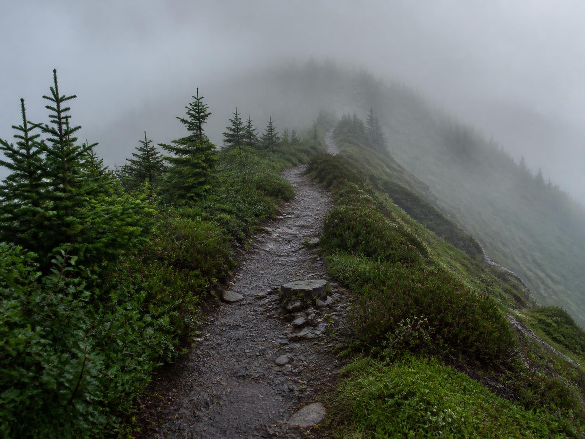

Mt. Fuji 2026
今年の富士山は、予約なしでも登れますか？
2026年は、4ルートすべてで入山前の手続きが必要です。知らずに現地へ行くと、入山できない場合があります。まず「いつ入るか」「山小屋を予約しているか」「事前手続きを終えたか」を確認してください。
吉田ルートでは、防寒具、上下がセパレートになった雨具、登山に適した靴が揃っていないと、ゲートを通れない可能性があります。ポンチョや上下一体型の雨具ではなく、上下が分かれた雨具を準備してください。他ルートの確認状況は異なるため、選んだルートの公式案内も確認してください。
- 吉田・富士宮・須走・御殿場のどのルートでも、通行料または入山料として4,000円が必要です。
- 環境保全と安全登山に関するオンライン講習の受講が必須です。
- 14時から翌3時に入山する場合、山小屋の宿泊予約が必須です。
- 制度は2026年時点のものです。出発前に富士登山オフィシャルサイトで最新情報を確認してください。

装備不足でゲートを通れないことがある？
吉田ルートでは五合目で装備チェックがあります。防寒具、上下がセパレートになった雨具、登山に適した靴のいずれかが不足していると、ゲートを通れない可能性があります。手続きやQRコードを済ませていても、装備チェックは別に備える必要があります。
公式はこのほかにも、ヘッドランプ、ザック、水と高カロリーの行動食、ゴミ袋、現金と100円玉などを必須として挙げています。全項目は富士登山の装備記事で確認してください。
この確認情報は吉田ルートについてのものです。他ルートにも同じ条件があるとは断定せず、利用するルートの最新情報を公式サイトで確認してください。準備の考え方は2026年の富士登山の服装・持ち物にまとめています。
予約なしでも手続きはできる？
事前のオンライン予約・決済ができ、完了するとQRコードの許可証が発行されます。予約受付は2026年5月開始です。スマートフォンがない場合は5合目で当日手続きもできますが、約30分程度かかります。
ただし、14時から翌3時に入山する人は、山小屋の宿泊予約がなければ入山できません。事前決済の有無とは別の条件として確認してください。
自分は吉田ルートの山小屋・東洋館に泊まり、深夜に出発してご来光を見ました。このような登り方は、現在の制度では14時から翌3時の時間帯に入山する場合の条件と直接関係します。深夜出発を計画するなら、事前の入山手続きとは別に、山小屋の宿泊予約が必要かを確認してください。
出発前から入山までの順番
- ルートと入山時刻を決める。 吉田・富士宮・須走・御殿場のいずれかと、入山する時間帯を確認します。
- 必要なら山小屋を予約する。 14時から翌3時に入山する場合は宿泊予約が必須です。
- オンライン講習を受ける。 環境保全と安全登山に関する講習は、入山前に受講する必要があります。
- オンラインで予約・決済する。 QRコードの許可証を受け取ります。スマートフォンがない場合は5合目で当日手続きができます。
- 直前に公式情報を見直す。 制度だけでなく、当日の天候や現地の案内も確認し、状況に応じて計画を変更してください。
1日の入山者が多いとどうなる？
1日の入山者が4,000人に達すると、入山規制がかかります。山小屋を予約している人は、14時から翌3時を除けば、4,000人を超えた後も入山できます。
山小屋予約があっても、時間帯による条件は別に適用されます。予約画面だけで判断せず、公式サイトの当日の案内も確認してください。
ルートによって呼び方や受付が違う
吉田ルートでは「通行料」、富士宮・須走・御殿場ルートでは「入山料」と呼びます。いずれも4,000円です。吉田ルートの予約は、山梨県の富士登山オフィシャルサイトから案内されるAsoviewを利用し、英語にも対応しています。
2026年の開山期間は、吉田ルート・須走ルートが7月1日から9月10日まで、富士宮ルート・御殿場ルートが7月10日から9月10日までです。制度や現地状況は変わり得るため、出発前に公式サイトでも確認してください。
初めての富士登山なら、手続き以外も分けて考える
許可証や山小屋予約は、装備・体力・天候に対する判断の代わりにはなりません。必要な装備や行動計画は、選ぶルート、当日の状況、自分の経験によって変わります。一般的な準備は登山の始め方も参考にしつつ、公式の最新情報と現地の案内を優先してください。
制度は年によって変わります。富士登山オフィシャルサイトで2026年の最新情報を確認してください。英語で読む方は公式英語版を利用できます。